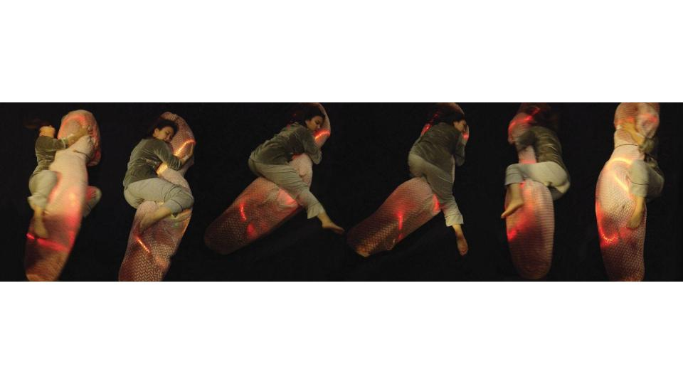
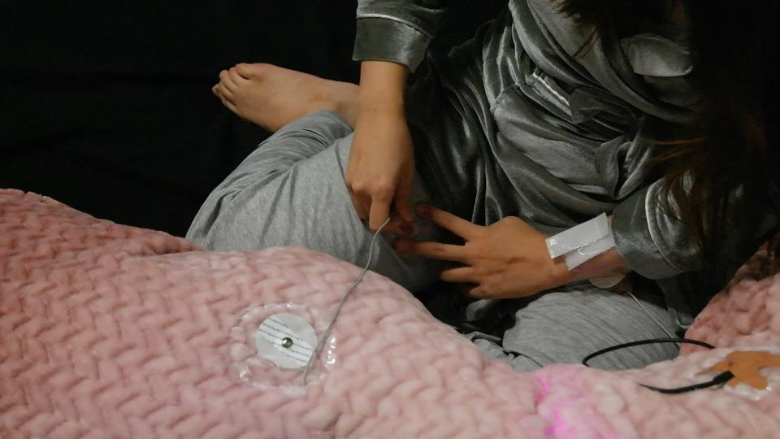
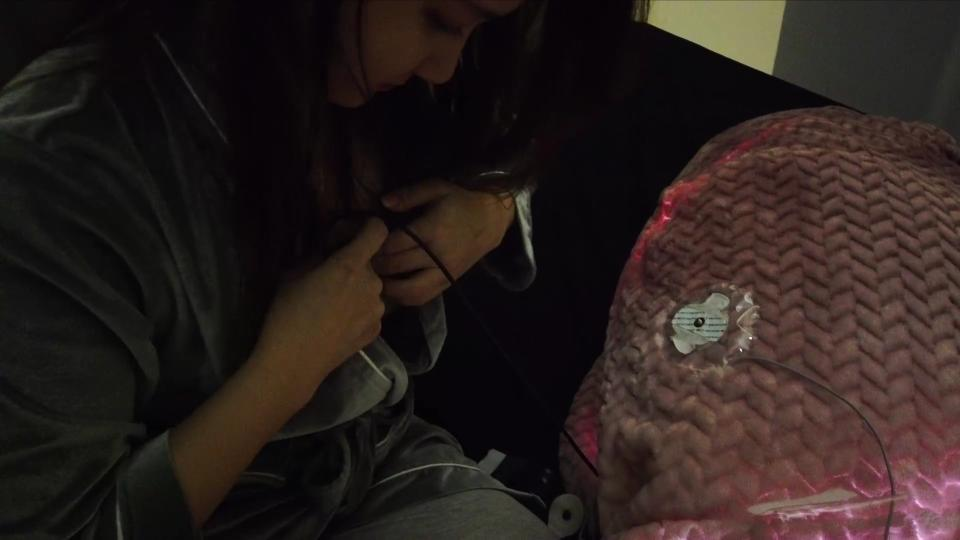

Love Algorithm
- Love Algorithm (2021)
- Describing 'Love' is a challenging task as people possess their unique interpretation systems and understanding of it, shaped by their desires and needs.
Often, we find ourselves in situations where we feel we are not receiving what we have given.
This led me to think love functions similarly to embedded algorithms of robots.
In pursuit of exploring this concept, I created a pillow-like robot that operates on an unknown algorithm,
and attempted to express its emotions through actions like petting, hugging, and rotating.
The robot provided feedback through changes in its colors, vibrations, and music,
however, I could never comprehend the essence of its emotions fully.
I acknowledged that the process of love is intricate and unpredictable.
Yet, I remain committed to continuing to love and never giving up, as humans always do.
-

-

-
